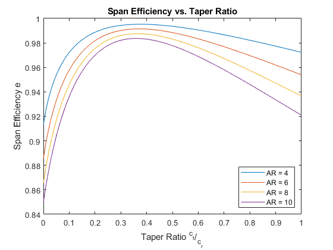

ASEN 3111 - Computational Assignment 03 - Main
Produces the lift coefficients and pressure distributions about four NACA airfoils and compares them to thin airfoils
Author: Samuel Razumovskiy Collaborators: B.Smith Date: 10/25/2019 (last revised: 11/7/2019)
Contents
(Knock knock) House keeping
clear,clc,close all
Problem 2
clear,clc,close all % Given constant values b = 100; % ft c_t = 5; % ft c_r = 15; % ft geo_t = 0; % deg geo_r = 5; % deg S = (c_r+c_t)/2*b; % ft^2 N = 100; v_inf = 150*1.46667; % ft/s [a0_t,aero_t] = Lift_Slope(0,0,12,c_t,v_inf); % 1/deg, deg [a0_r,aero_r] = Lift_Slope(2,4,12,c_r,v_inf); % 1/deg, deg [~,c_L_actual,c_Di_actual] = PLLT(b,a0_t,a0_r,c_t,c_r,aero_t,aero_r,geo_t,geo_r,N); Dfound5 = false; Dfound1 = false; Dfound10 = false; Cfound5 = false; Cfound1 = false; Cfound10 = false; for N = 2:100 [~,c_L,c_Di] = PLLT(b,a0_t,a0_r,c_t,c_r,aero_t,aero_r,geo_t,geo_r,N); if abs(c_Di-c_Di_actual)/c_L_actual < 0.05 && Dfound5 == false Derror5 = N; Dfound5 = true; elseif abs(c_Di-c_Di_actual)/c_L_actual< 0.01 && Dfound1 == false Derror1 = N; Dfound1 = true; elseif abs(c_Di-c_Di_actual)/c_L_actual< 0.001 && Dfound10 == false Derror10 = N; Dfound10 = true; end if abs(c_L-c_L_actual)/c_L_actual < 0.05 && Cfound5 == false Cerror5 = N; Cfound5 = true; elseif abs(c_L-c_L_actual)/c_L_actual< 0.01 && Cfound1 == false Cerror1 = N; Cfound1 = true; elseif abs(c_L-c_L_actual)/c_L_actual< 0.001 && Cfound10 == false Cerror10 = N; Cfound10 = true; end if Cfound10 == true && Dfound10 == true break end c_L_actual = c_L; c_Di_actual = c_Di; end L = 1/2*0.002377*v_inf^2*c_L*S; % lbf Di = 1/2*0.002377*v_inf^2*c_Di*S; % lbf fprintf('Lift = %.0f lbf\n',L) fprintf('Induced Drag = %.0f lbf\n\n',Di) fprintf('For Lift relative error of 5%% N = %.0f\n',Cerror5) fprintf('For Lift relative error of 1%% N = %.0f\n',Cerror1) fprintf('For Lift relative error of 0.1%% N = %.0f\n',Cerror10) fprintf('For Drag relative error of 5%% N = %.0f\n',Derror5) fprintf('For Drag relative error of 1%% N = %.0f\n',Derror1) fprintf('For Drag relative error of 0.1%% N = %.0f\n',Derror10)
Lift = 23798 lbf Induced Drag = 450 lbf For Lift relative error of 5% N = 4 For Lift relative error of 1% N = 6 For Lift relative error of 0.1% N = 12 For Drag relative error of 5% N = 2 For Drag relative error of 1% N = 3 For Drag relative error of 0.1% N = 6
Problem 3
clear,clc,close all % Vector of tip chord c_t = linspace(0.001,15)'; % ft c_r = 15; % ft % Given aspect ratios AR = [4,6,8,10]; % Span for a given aspect ratio and tip chord b = ((AR.*(c_r+c_t))./2); % ft N = 50; v_inf = 150*1.46667; % ft/s a0_r = 2*pi^2/180; % 1/deg a0_t = 2*pi^2/180; % 1/deg aero_t = 0; % deg aero_r = 0; % deg geo_t = 1; % deg geo_r = 1; % deg e = zeros(numel(c_t),numel(AR)); for i = 1:numel(AR) for j = 1:numel(c_t) [e(j,i),~,~] = PLLT(b(j,i),a0_t,a0_r,c_t(j),c_r,aero_t,aero_r,geo_t,geo_r,N); end end ct_cr = c_t./c_r; plot(ct_cr,e) title('Span Efficiency vs. Taper Ratio') xlabel('Taper Ratio ^{c_t}/_{c_r}') ylabel('Span Efficiency e') legend('AR = 4','AR = 6','AR = 8','AR = 10','location','southeast')
Functions Called
The following functions were built and called as part of this assignment.
No filename specified in include markup.